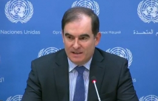

Sudan/South Sudan: “Ordinary people asked us to raise our voices”
Worsening humanitarian crises in Sudan and South Sudan demand more attention from the international community and increased funding for humanitarian organizations. This was the message delivered by OCHA’s Operations Director John Ging in a press briefing at UN Headquarters in New York.
“Everywhere we went we were appealed to by ordinary people to raise our voices [and] influence those in leadership positions to bring the violence to an end,” he said, on his return from a week-long visit to the two countries with the Emergency Directors of eight UN Humanitarian Agencies and international NGOs. “This is the number one issue for ordinary people.”
Darfur: More people displaced in 2013 than any year since 2004
At the beginning of this year, the UN estimated that more than 6.1 million people in Sudan were in need of humanitarian assistance – an increase of 40 per cent since January 2013. Much of this increase reflects the worsening situation in Darfur where persistent insecurity has displaced an estimated 2 million people.
Close to 400,000 were estimated to have been displaced in Darfur in 2013 – the highest figure since 2004 when the crisis first garnered international attention. Since the beginning of this year, almost 200,000 more people have been forced from their homes.
“This dire humanitarian situation is compounded by the fact that, with so many crises around the world at the moment, Darfur isn’t […] getting the attention and the support that is needed to respond effectively,” he said.
Only a fraction of funding received so far
Despite the deterioration in Darfur, international interest has continued to wane, a fact reflected in decreased funding for humanitarian operations. The aid community has so far received only a fraction of the funding it needs in Sudan in 2014 – US$54 million out of $995 million.
Mr. Ging spoke also of the difficulties that aid groups in Sudan face, an issue that he and the Emergency Directors raised with Government officials. In addition to the extremely challenging operating environment in Darfur, they also discussed the continued inability of the UN to access rebel-held parts of South Kordofan and Blue Nile States.
“Nearly two years since the adoption of Security Council resolution 2046 (calling for humanitarian access to these regions), aid has still not been delivered to rebel-held areas where it is estimated 800,000 people are in need of assistance,” he said.
“We hope the positive discussions will be swiftly converted into aid on the ground.”
South Sudan: “The first thing that struck us was the brutality”
The Executive Directors also visited South Sudan, where more than three months of violence has left about 4.9 million people in need of humanitarian assistance. The aid officials were deeply affected by the stories they heard, said Mr. Ging.
“The first thing that struck us when we met people was the brutality of what was happening,” he said. “[We heard] testimonies of old women being raped and attacked in hospitals, [of] brutality against children, and the appalling conditions that people who have been displaced by this conflict are now enduring.”
These sentiments were echoed by Yasmin Haque, Deputy Director for Emergency Operations for the UN Children’s Fund (UNICEF). Dr. Haque took part in the visit to Sudan and South Sudan, and briefed the press alongside OCHA’s Ging.
Dr. Haque was formerly UNICEF’s South Sudan representative and she shared her impressions of how drastically the situation has changed in recent months.
“It is tragic to see what has happened. When we started at independence in 2011 we asked children what they wanted from their new nation. They said three things: peace, security and education. Sadly for most children in South Sudan, that is not a reality.”
“We are in a race against time”
As with Sudan, Mr. Ging raised concerns about the slow response from international donors. Aid groups in South Sudan have only received about 23 per cent of the funds they need for 2014.
The humanitarian community needs funding to arrive soon so they can pre-position supplies before the rainy season starts and cuts off most of the country’s road network.
“We are in a race against time,” said Mr. Ging. “We appeal to our donor community to give us the funding that we need to do the things that we most urgently need to do in the quickest way possible.”

{kind=link}